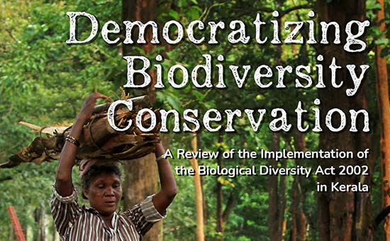
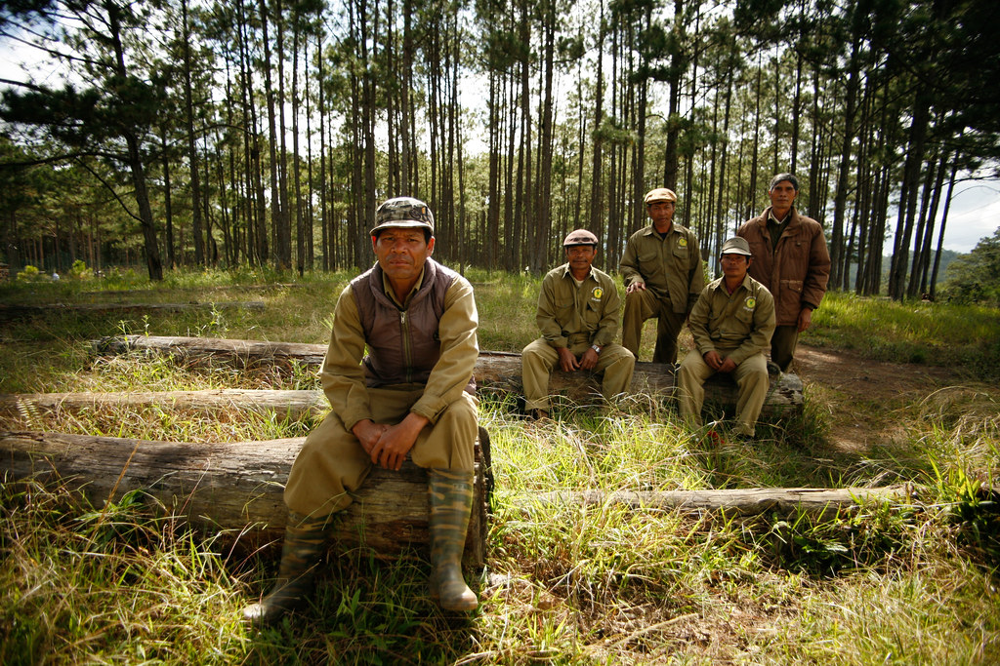

In Situ Conservation
In Situ Conservation refers to the preservation and protection of the species in their natural habitat. It means the conservation of genetic resources in natural populations of plant or animal species. In situ conservation involves the management of biodiversity in the same area where it is found. In situ, biodiversity conservation has many advantages It preserves species as well as their natural habitat. It ensures protection to a large number of populations. It is economic and a convenient method of conservation It doesn’t require species to adjust to a new habitat. Different methods of In-situ conservation include biosphere reserves, national parks, wildlife sanctuaries, biodiversity hotspots, gene sanctuary, and sacred groves. It is defined as the conservation of species within their natural habitat, where the natural ecosystem is protected and maintained. In-situ conservation possesses numerous advantages. Some of the important advantages of in-situ conservation are as follows: It is a cost-effective and convenient way of biodiversity conservation. Various living organisms can be conserved at the same time. They can evolve better and can easily get adapted to various environmental conditions. In-situ conservation occurs in places like national parks, wildlife sanctuaries, and biosphere reserves.

Biosphere Reserves These are national governments nominated sites, large areas (often up to 5000 square km) of an ecosystem where the traditional lifestyle and natural habitat of the inhabitants of that ecosystem are protected. They are mostly open to tourists and researchers. Example- Sundarban, Nanda Devi, Nokrek, and Manas in India. National Parks These are limited reserves maintained by the government for the conservation of wildlife as well as the environment. Human activities are prohibited in national parks and they are solely dedicated to the protection of natural fauna of the area. They mostly occupy an area of 100-500 square km. There are a total of 104 national parks in India, right now. The national parks may even be within a biosphere reserve. These are small reserves that are protected and maintained by the government. Its boundaries are well protected, where human activities such as grazing, forestry, habitat, and cultivation are restricted. Example- Kanha National Park, Gir National Park, Kaziranga National Park, and so on.
Wildlife Sanctuaries Wildlife Sanctuaries are protected areas meant only for the conservation of wild animals. A few human activities such as cultivation, wood collection, and other forest product collection are allowed here, but they must not interfere with the conservation of the animals. Tourist visits are also allowed in these areas. There are a total of 551 wildlife sanctuaries in India. These are the places where only wild animals can be found. Certain human activities like timber harvesting, cultivation, collection of woods, and other forest products are permitted unless they interfere with the conservation project. Recreation tourism is also permitted. Example- Ghana Bird Sanctuary, Abohar Wildlife Sanctuary, Mudumalai Wildlife Sanctuary, etc. Biodiversity Hotspots A biodiversity hotspot are the areas of conservation where there is strictly a minimum of 1500 species of vascular plants and a habitat that has lost its 70% cover. These are protected areas for various purposes where the wildlife, inhabitant lifestyle, and domesticated plants and animals are conserved. Tourist and research activities are allowed. Example- The Himalayas, The Western Ghats, The North East, and The Nicobar Islands.

Gene Sanctuary Gene sanctuary is a conservation area reserved only for plants. India has its only gene sanctuary set up in Garo Hills of Meghalaya for the conservation of wild species of Citrus. Plans to open more such sanctuaries are underway. Sacred Groves Sacred Groves are conserved areas for wildlife protected by communities due to religious beliefs. It is mostly a part of the forest where its wildlife is given complete protection.